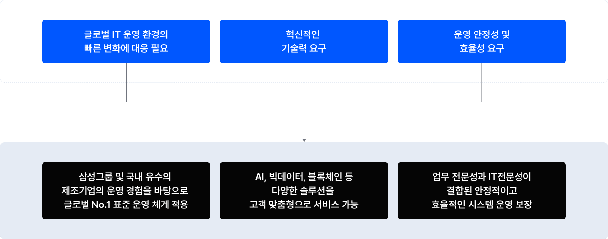
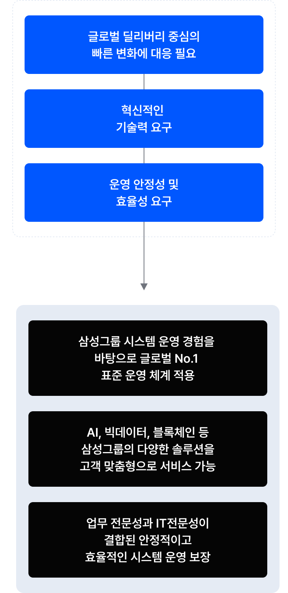

필요성
체계적인 IT운영과 비용 절감을 위한 ITO 서비스 필요

글로벌 IT 운영 환경의 빠른 변화에 대응 필요, 혁신적인 기술력 요구, 운영 안정성 및 효율성 요구, 삼성그룹 및 국내 유수의 제조기업의 운영 경험을 바탕으로 글로벌 NO.1 표준 운영 체계 적용, AI, 빅데이터, 블록체인 등 다양한 솔루션을 고객 맞춤형으로 서비스 가능, 업무 전문성과 IT 전문성이 결합된 안정적이고 효율적인 시스템 운영 보장

글로벌 IT 운영 환경의 빠른 변화에 대응 필요, 혁신적인 기술력 요구, 운영 안정성 및 효율성 요구, 삼성그룹 및 국내 유수의 제조기업의 운영 경험을 바탕으로 글로벌 NO.1 표준 운영 체계 적용, AI, 빅데이터, 블록체인 등 다양한 솔루션을 고객 맞춤형으로 서비스 가능, 업무 전문성과 IT 전문성이 결합된 안정적이고 효율적인 시스템 운영 보장